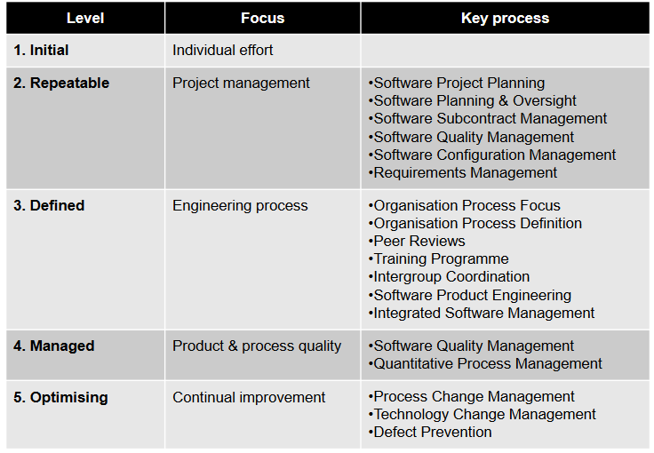
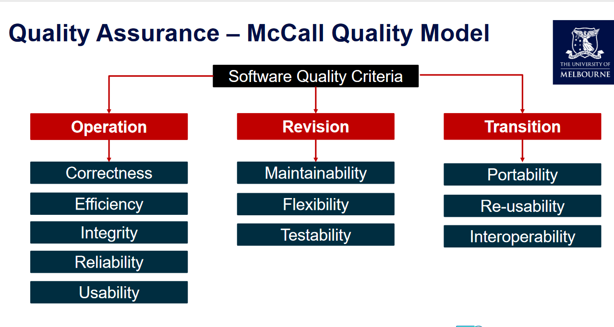
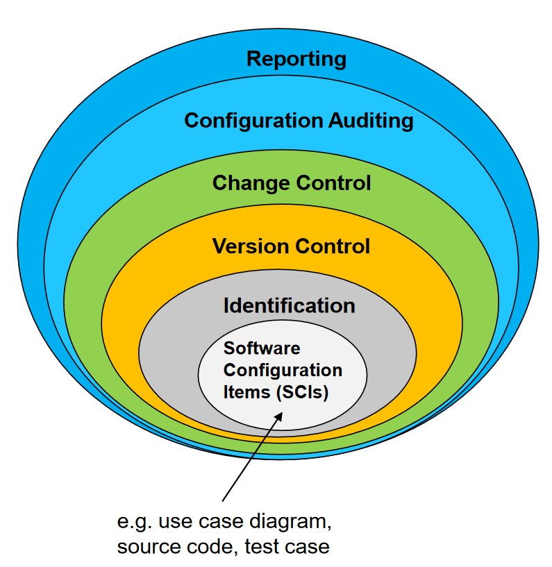

Scrum
Scrum is a lightweight framework that helps teams and organizations generate value and is based on transparency, inspection and adapatition.
Scrum Master: (促进团队合作, 沟通, 减少障碍): Fostering Communication, Agile Coaching, Protecting the Team, Team support, Remove obscale
Product Owner (manage requirement, manage product backlog, adjuct priority, decide what can be deliverable) Terminating a sprint, Participating in daily scrums,Managing product backlog, Anticipating client needs
Dev Team: Self organization, Cross functional,Estimates possible release date of features
Other Agile frameworkds
Kanban: Visualising work, Limiting work progress, Maximising effciency, Focous on reducing the time taken to take a project to finish
eXtremre Programing: Frequencet releases in short development cycles ,Intended to improve productivity and introduce checkpoints ,Pair programming
Project Schedule is used and maintained throughout the project to monitor and track project progress – it is a living document.
Project schedule contain 1. Duration and dependencies for each task 2. People and physical resources required by each task 3. Milestones and deliverables 4. Project Timeline
Waterfall (Predictive) Process
Agile(Adaptive) Process
Key Comparison
Examples of Task Dependencies
Outsouring : The practice of engaging an external party (under contract) to perform services or create goods that are traditionally performed in-house by the company's own employees.
Procurement buy (outsource) any products or services from outside the organisation
| Procurement Phase | Key Activities |
|---|---|
| Plan | 1. Consulting key stakeholders to define the real need |
| 2. Analyzing how the supply market works | |
| 3. Assessing risks | |
| 4. Defining the best procurement strategy to meet organizational requirements | |
| Source | 1. Identifying and engaging suppliers to provide best value for money |
| 2. Ensuring procurement is conducted with probity and fairness | |
| 3. Determining the appropriate sourcing method (e.g., tendering, negotiation, or direct procurement) | |
| Manage | 1. Understanding and managing the rights and responsibilities of all parties involved |
| 2. Ensuring ongoing supplier relationship management after contract signing | |
| 3. Delivering the best outcomes for the organization through effective contract management and continuous monitoring |
Cost of Software Quality Management
Conformance : Delivering products that meet requirements and are fit for purpose.
Nonconformance :Refers to taking responsibility for failures or not meeting quality expectation
Quality Management Processes: 1. PerformingQuality Assurance 2. Quality Control 3. Performing Quality Control
Quality Assurance
Verification and Validation
Verification: Ensuring you are building the system right (the right way).
Validation: Ensuring that you are building the right system (to meet stakeholder needs).
Quality Assurance –Types of Testing
Unit Test
Integration Testing
System Testing
User Acceptance Testing
Quality Assurance -Software Standards and Systems
Advantages of standards
Disadvantages of standards
Quality Assurance -Capability Maturity Model Integration (CMMI)
Describes an approach for software companies to move from an ad-hoc, immature process to a mature developed process.Organizations are characterised being at a Level from 1-5 based on the processes they follow.
 Quality planning
Incorporating quality standards into project design
Product Overview Product Plan Quality Goals Process Description Document and Coding Standards Risks and Risk Management
Quality Control and Monitoring
Involves monitoring the software development process to ensure that the quality assurance procedures and standards specified in the Software Quality Plan are being followed.
Three common types of reviews (there are also other types of reviews): 1. Technical Reviews 2. Business Reviews 3. Management Reviews
Technical Reviews Reviews of artefacts is performed by peers in the development team but the author/s are involved.
Business Reviews The goal of a business review is to ensure that the IT solution provides the functionality specified in the project scope and requirements document.
Management Reviews Compares the project’s actual progress against a baseline project plan. Project Manager is responsible for presenting the project progress and providing a clear picture of the current status. May involve reviewing if the project meets the scope, schedule, budget and quality objectives.
Agile Centric Software Quality Management
Test Driven Development (TDD)
Acceptance-Test Driven Development QA Practices
Stakeholders are first engaged to collaboratively discusses acceptance criteria, with stakeholders and team members providing input on what to test before any code is written.
Tests are then written to evaluate these specifications, and only then writing the actual code to implement that feature.
Behavior-Test Driven Development QA Practices
It focuses on defining the behavior of software through conversation and concrete examples and writing specifications in clear and plain language.
CI / CD meets the first principle of the Agile Manifesto: “Our highest priority is to satisfy the customer through early and continuous delivery of valuable software”.
Continuous integration requires that every time somebody commits any change, the entire application is built and a comprehensive set of automated tests is run against it.
Risk Analysis - Qualitative risk probability (P) risk impact (I) $$ \text{Risk exposure} = P \times I $$
Risk Assessment - Quantitative Quantitative approaches include mathematical and statistical techniques
Risk Management In Agile Plan: Risk Registers can be documented in a Risk Register
Identify: Risk assessment workshops conducted by Product Owner to identify areas. Risks are added as user stories and prioritized in Product Backlog
Analyse and Assess (Qualitative and Quantitative): Team members analyses/assess and plan these risks during sprint planning. They can add new risks as they discover
Respond (Action): Mitigation strategies defined for risk items and completed within sprint.
Monitor and Control: Product Owners receive regular updates on risk register. Scrum master monitors risks in daily stand ups
A Software Configuration is: 1. The total of all the artefacts. 2. The current state of all the artefacts 3. The dependencies between all the artefacts.
The aim of configuration management is to manage change properly without losing overall consistency through: 1. Establishing processes 2. Setting up repositories 3. Using other appropriate tools and techniques
Configuration Management aims: 1. To identidy all items that collectively will make up the configuration. 2. To manage changes to one or more of these items so that the collection remains consistent. 3. To manage different verisons of the product. 4. To assure software quality as the configuration evolves over time.
